Cobra · Design d'architecture multi-agents
Agent autonome de traitement des factures fournisseurs
Contexte
Hugo traitait manuellement chaque facture fournisseur dans Odoo : vérification des lignes, ajout DEEE/port/remises, matching TTC, confirmation. Objectif : ne toucher Odoo qu'une fois par semaine pour le batch SEPA, tout le reste se passe dans Teams.
Ce qui a été construit (design)
- Cartographie des 5 canaux d'entrée + identification des deux principaux Cobra :
comptabilite@cobra.fret PO via chatter - Distinction familles comptables : marchandises (liées PO, 607xxx) vs frais généraux (6xxxx)
- Matching ligne par ligne : hiérarchie d'identification (code fournisseur → EAN → nom → prix), normalisation quantités (paire/pièce), seuil alerte prix 2%, DEEE/port intégré ou séparé
- Actions Adaptive Cards Teams : validation, correction, création paiement, navigation — zéro interface Odoo sauf batch SEPA
- Architecture multi-agents : Orchestrateur / Agent Teams / Agent Odoo / Agent Patterns
scan_fournisseurs.py: extraction des partenaires ≥ 4 factures sur 12 mois + structure JSON patterns

Ce qui était difficile
- La gestion paire/pièce est un piège silencieux : Odoo ne remonte pas d'erreur si la quantité est fausse, l'écart n'apparaît que dans le TTC. Facteur mémorisé par fournisseur
- DEEE et port ne peuvent pas être des lignes fixes : certains fournisseurs les intègrent dans le prix unitaire. L'agent construit le pattern progressivement
Stack
Python XML-RPC, Adaptive Cards v1.5, webhook Teams, JSON (patterns), Odoo 18 (account.move, account.move.line, purchase.order, product.supplierinfo, account.payment), Claude Code.
Ce que ça illustre
Session de design à haut niveau avant implémentation : architecture, règles métier complexes et cas limites cadrés *avant* d'écrire une ligne de code. Claude sert ici de product manager technique qui formalise ce que le DG a en tête et le traduit en plan d'implémentation précis.